좋은 PCB 설계는 좋은 Library에서 시작된다
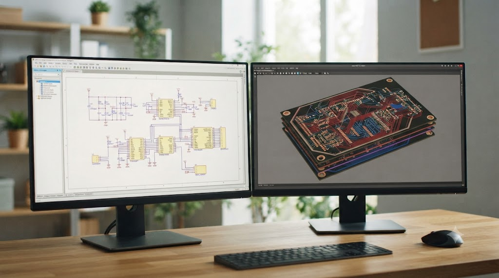
1. PCB Library란 무엇인가?
PCB를 설계하려면 먼저 준비해야 하는 것이 있습니다. PCB는 부품들 간에 전기 신호가 연결되어 작동하도록 해야 하는데, 이 복잡한 연결구조를 사람이 표현하고 이해하기 쉽도록 반드시 회로도를 그려 놓아야 합니다.
그런데 회로도에 사용되는 저항, IC, 커넥터와 같은 부품들은 단순한 그림이 아니라 PCB 설계를 위한 기초 데이터 역할을 할 수 있도록 구성해야 합니다.
PCB Library는 PCB 설계에 사용되는 모든 부품의 정보를 저장해 놓은 데이터베이스(Database)라고 생각하면 이해하기 쉽습니다.
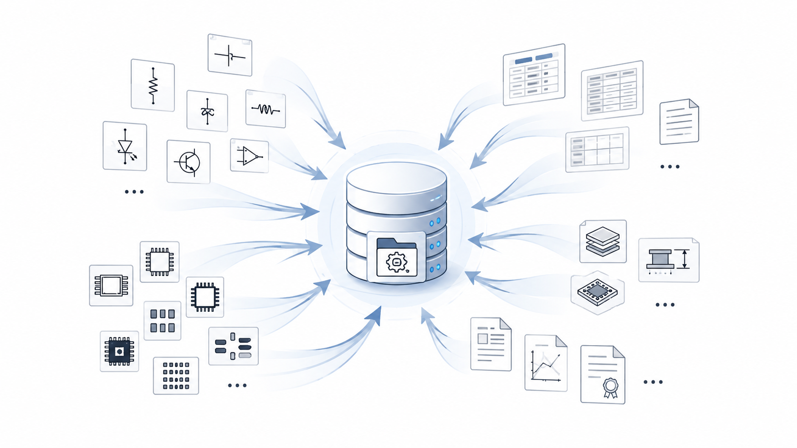
예를 들어 메모리 부품 하나를 설계에 사용한다고 하면 단순히 “메모리”라는 이름만 필요한 것이 아닙니다. 설계를 하기 위해서는 다음과 같은 정보가 반드시 필요합니다.
- 회로도에서 사용할 Symbol
- PCB에 배치할 Footprint (툴에 따라 decal, cell, geometry)
- 부품의 식별 코드(Part Number) 및 부품의 특성
필요에 따라 다음과 같은 추가 정보가 필요할 수도 있습니다.
- 3D Model
- Simulation Model
- 공급업체 정보
- 부품의 Lifecycle 정보
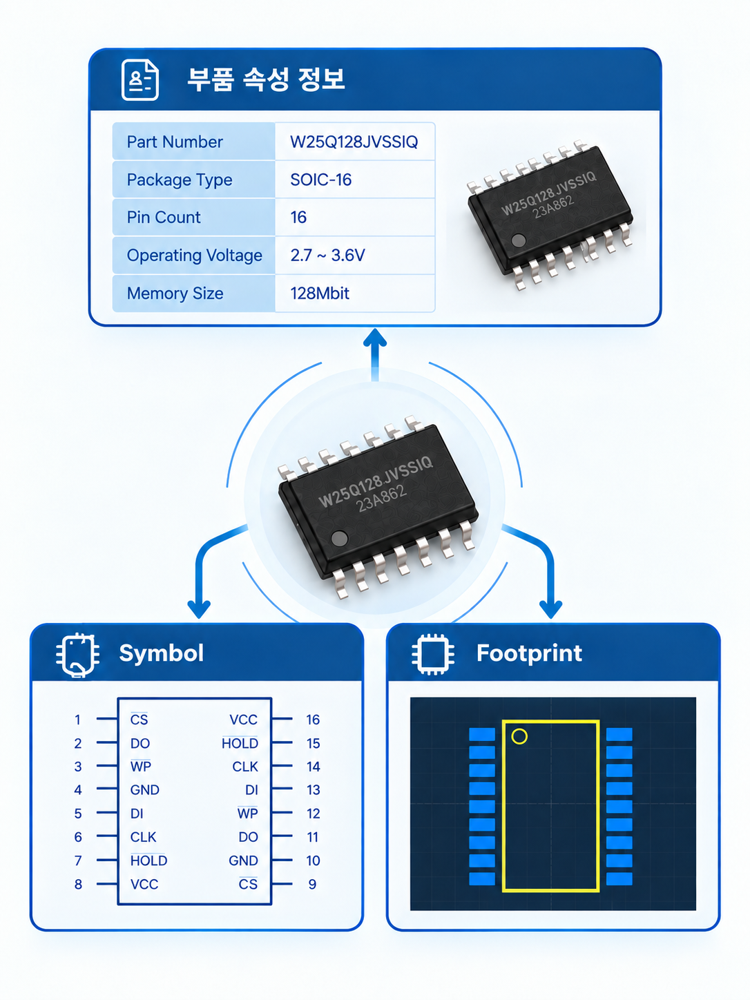
이러한 모든 정보가 하나의 Library 안에서 관리됩니다.
PCB 설계툴은 Library에 등록된 정보를 이용하여 회로도 작성 → PCB Layout → BOM 작성 → 제조 → 조립 까지 연결하게 됩니다.
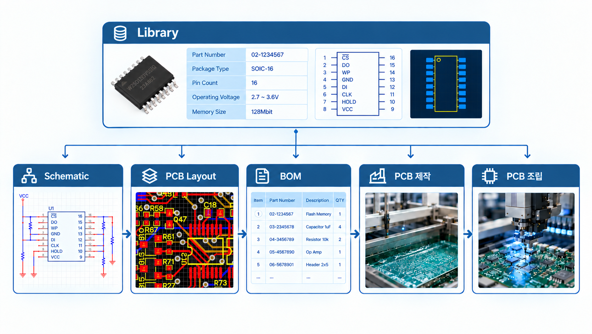
따라서 PCB Library는 PCB 설계의 출발점이자, 모든 설계 데이터의 기준이라고 할 수 있습니다.
2. PCB Library의 구성 요소
PCB Library에는 부품의 모습과 함께 다양한 정보를 하나로 연결하여 관리합니다. PCB Library에서 관리되는 대표적인 정보는 다음과 같습니다.
1) Symbol
회로도를 작성할 때에는 저항, 캐패시터, OP AMP, 메모리 IC 등 여러 종류의 부품을 사람이 이해하기 쉬운 모양으로 표현해야 합니다.
Symbol은 이러한 부품들을 회로도에서 쉽게 알아보기 위해 사용되는 기호입니다.
따라서 실제 부품의 모습과는 다르게, 해당 부품의 기능을 상징하는 모습으로 되어 있습니다.
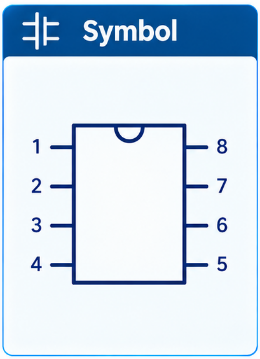
2) Footprint
Footprint는 PCB 기판 위에 부품이 놓이는 모습을 상징하는 패턴으로, 납땜이 되어 전기신호가 연결되는 형상을 포함하고 있습니다.
예를 들어 같은 용량의 저항이라도 0402, 0603, 0805, 1206 등의 패키지 종류에 따라 Footprint가 달라집니다. IC 부품 역시 QFP, QFN, BGA, SOP 등 Package, 즉 부품 외형 규격에 따라 Footprint가 모두 달라집니다.
PCB 기판을 제조할 때에는 설계 데이터에 표현된 Footprint를 기준으로 Copper Pad, Solder Mask, Paste Mask, Silkscreen 등을 처리하여 부품이 적절히 안착될 수 있도록 합니다.
즉, Footprint는 실제 생산 품질을 결정하는 매우 중요한 데이터입니다.
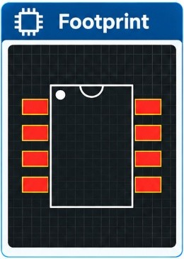
3) 부품 속성(Property)
부품은 다양한 속성 정보를 갖고 있습니다.
예를 들면 Part Number, 제조사 정보, Description, Package, Value 값, Voltage 값, Value 오차범위, 온도범위 등입니다.
이 정보는 BOM, 즉 부품목록의 작성에 사용되며, ERP, 조달 시스템, PLM, 제조시스템과도 연결될 수 있습니다.
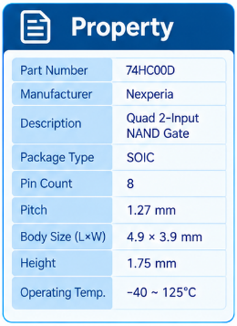
4) 3D Model
최근 PCB 설계에서는 3D Model 사용이 매우 일반화되었습니다.
3D Model을 이용하면 기구 간섭 확인, 제품 조립성 검토, 다양한 시뮬레이션 등이 가능합니다.
특히 기구 설계(MCAD)와 긴밀하게 협업할 때에 필수 요소가 되었습니다.
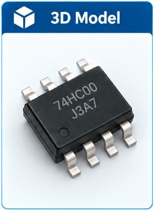
5) Simulation Model
고속 회로나 아날로그 회로에서는 Simulation Model도 함께 사용됩니다.
대표적으로 SPICE Model, IBIS Model 등이 있습니다.
Simulation Model을 사용하면 PCB 실물을 제작하기 전에 미리 신호 품질 등을 검증해서 실패를 방지하고 비용과 시간을 축소시킬 수 있습니다.
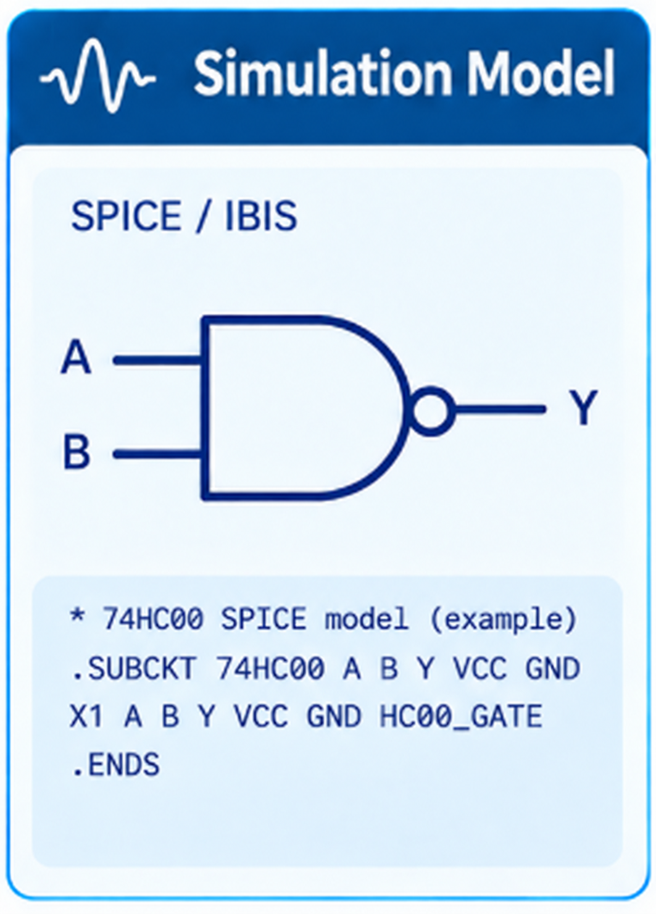
3. 왜 중앙 Library가 필요한가?
많은 회사에서는 처음에는 개인이 직접 자신에게 필요한 Library를 만들어 사용합니다. 처음에는 문제가 없어 보이지만 조금만 시간이 지나도 여러 문제에 부딪히게 됩니다.
대표적인 문제는 동일한 부품을 설계자마다 서로 다르게 표현하는 것입니다.
예를 들어 동일한 IC인데 설계자 A는 soic_8p-final, 설계자 B는 soic-8p-logic, 설계자 C는 soic_8p-ss라는 이름으로 Symbol을 등록할 수도 있습니다.
Symbol의 모양이나 Footprint의 모양도 조금씩 달라질 수 있습니다.
이렇게 되면 관리의 어려움뿐 아니라 중복작업, BOM 오류, 생산 오류 또는 품질 차이 등이 발생하게 됩니다.
따라서 기업에서는 개인 Library 대신 표준 Library(Central Library)를 구축하여 모든 설계자가 동일한, 검증된 Library를 사용하도록 해야 합니다.
중앙 Library는 ERP에서부터 CAD, BOM, 조달 시스템, PLM, 제조시스템까지 연결되는 핵심 데이터가 됩니다.
4. 왜 Library 관리가 회사 경쟁력인가?
많은 사람들이 PCB 설계 능력이 제일 중요하다고 생각합니다. 하지만 실제 제조 현장에서는 Library 품질이 제품 품질을 결정하는 경우가 매우 많습니다.
대표적인 사례로 Footprint의 Pad 크기나 길이가 잘못 설계되었다고 가정해 보겠습니다. 설계 단계에서는 문제가 없어 보일 수 있습니다. 하지만 생산에서는 납땜 불량, Open(신호단선), Short(신호단락) 등이 발생할 수 있습니다.
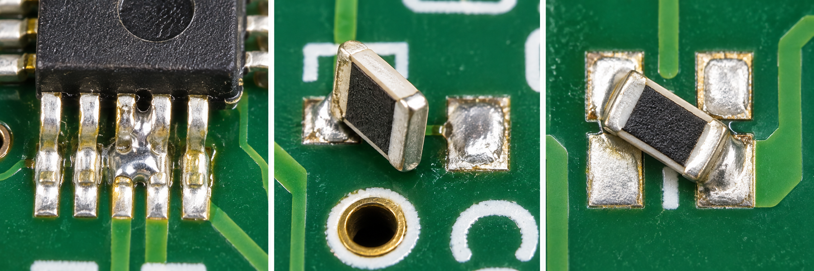
수리가 어려운 위치에서 이런 문제가 발생하면 결국 조립된 PCB를 전부 폐기하고 다시 제작해야 하는 상황도 생길 수 있습니다. 이러한 문제는 Library의 오류에서 시작되는 경우가 많습니다.
Library 관리가 잘 되면 이미 검증된 Symbol과 Footprint를 반복해서 다른 설계에 사용할 수 있습니다. 이를 통해 설계시간 단축, 검증비용 절감, 품질향상, 생산안정성 확보, 도면 재활용 등 여러 효과를 볼 수 있습니다
즉, 좋은 Library는 단순한 데이터가 아니라 회사의 설계 자산(Know-how)이라고 할 수 있습니다.
5. Library를 어떻게 표준화할 것인가?
기업에서는 Library를 체계적으로 관리하기 위한 표준을 정하여 중앙에 통합된 Central Library를 운영해야 합니다. 대표적인 관리 방법은 다음과 같습니다.
1) 모든 부품은 일정한 규칙으로 이름을 작성해야 합니다.
예를 들어 Footprint의 이름을 res_0402, cap_0603, ic_qfp16_p0.8처럼 일관된 규칙을 사용하고, 동일한 형상을 가진 부품이 공유하여 사용하면 검색과 관리가 쉬워집니다.
2) 등록 및 변경에 대한 승인 절차가 필요합니다.
기업의 중앙 Library는 아무나 임의로 수정하면 안 됩니다. 새로운 부품을 등록하거나 기존 데이터를 수정할 때에는 검토와 승인 절차를 거치도록 하여 요청 → 제작 → 검토 → 승인 → 등록과 같은 프로세스를 운영합니다.
3) 변경 이력을 관리해야 합니다.
Footprint가 수정되거나 속성이 변경되면 언제, 누가, 왜 변경했는지를 기록해야 합니다. 이러한 변경 이력은 문제 발생 시 원인을 추적하는 데 매우 중요한 역할을 합니다.
4) 배포 관리가 잘 되어야 합니다.
따라서 중앙 서버를 이용한 배포(공유)와 백업 관리가 필수적입니다.
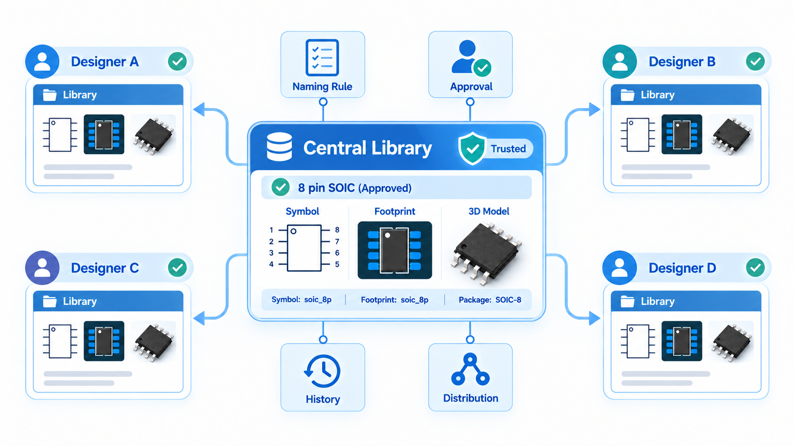
마무리
PCB Library는 단순히 부품의 Symbol과 Footprint 형상만을 저장하는 공간이 아닙니다.
회로도(Symbol), PCB 패턴(Footprint), 부품 속성, 3D Model, 시뮬레이션 모델 등 설계와 제조에 필요한 모든 정보를 연결하는 핵심 데이터베이스입니다.
특히 기업에서는 중앙 Library를 구축하고 표준화된 관리 체계를 운영함으로써 설계 품질을 높이고, 부품 재사용을 확대하며, ERP·PLM과 같은 시스템과의 연계를 통해 업무 효율을 향상시킬 수 있습니다.
결국 잘 관리되는 PCB Library는 설계자의 생산성을 높이는 도구일 뿐만 아니라, 회사의 기술 자산이자 경쟁력을 결정하는 중요한 기반입니다.